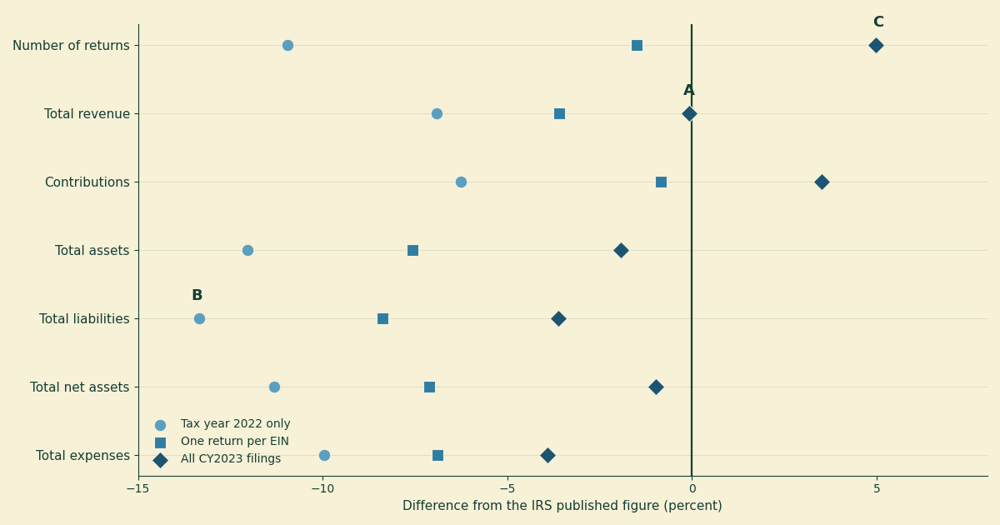
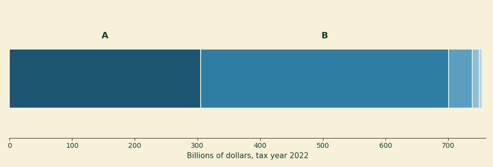

Checking our work: our numbers against the IRS's own
Two posts in this series end with the same admission in their small print. In nobody’s average it reads: the aggregate “has not been reconciled line-by-line against the IRS’s own published SOI tables, which is the check that would catch a processing error.” The public support cliff says the figures “have not been reconciled against the IRS’s own published SOI tables” and leaves it there. The same unchecked pipeline sits under months of cash at scale and below zero.
It is an honest disclosure and it is also an IOU. We had been computing sector totals from a 247-megabyte file and asking readers to trust that we had summed the right column of the right rows, while noting that the one external check available on that claim was a check we had not run. This post runs it.
The short version: the percentages we have published hold up, the row filter all four posts use is measurably biased downward on dollar totals, and a correction we issued six days ago described a 40 percent share as “roughly half.” The last one gets its own correction, below.
The two files are not the same thing, and cannot be made to be
The instinct is to line the two sources up and treat any difference as our error. That instinct is wrong, and understanding why is most of the work.
What we use is the annual extract of Form 990 financial data — an administrative file containing selected fields from every Form 990 the IRS processed during a given calendar year. It is a population, not a sample. It is keyed to a filing year: the CY2024 file we normally use holds every return that came through the door in 2024, whatever tax year those returns are for. The IRS is explicit that it is a byproduct of program administration, and that transcription and processing adjustments can make it differ from what organizations originally reported.
What the IRS publishes is something else. The SOI statistics for charities include Table 1, “Form 990 Returns of 501(c)(3) Organizations: Balance Sheet and Income Statement Items, by Asset Size.” Its header says what it is: all figures are estimates based on samples. It is a weighted probability sample, keyed to a tax year, denominated in thousands of dollars. Its notes exclude private foundations, most organizations with receipts under $50,000, most churches, and certain other religious organizations. The most recent edition available as of this writing covers tax year 2022.
So: population versus sample, filing year versus tax year, dollars versus thousands, and different exclusions. Two numbers computed from those two things will differ even if nobody has made a mistake. The question worth asking is not do they match but how far apart are they, and is the distance explained by the things we already know are different.
One consequence is immediate. Our usual file is CY2024 — mostly tax year 2023 — and the newest published table is tax year 2022. Comparing those would fold a full year of sector growth into the measurement and tell us nothing about the pipeline. So this check uses the CY2023 extract instead, the file whose returns are mostly tax year 2022, and compares it against the TY2022 table. That is the closest alignment the two publication schedules allow.
Three defensible cuts, one of which is ours
Given a filing-year file and a tax-year target, there is more than one reasonable way to select rows. We tried three, all defensible:
One return per EIN — deduplicate to a single filing per organization, keeping the latest tax period. 245,065 returns. This is what all four of our published posts do, and it is why months of cash at scale describes trimming its file “from 345,365 rows to 324,416 organizations.”
Pooled — every 501(c)(3) Form 990 row in the CY2023 file, 261,146 returns, with no deduplication at all.
Tax year 2022 only — keep rows whose tax period falls in TY2022, discarding late filers still settling up for 2021 and early filers already reporting 2023. 221,549 returns. This is the cut that sounds most correct.
Figure 1 shows how each lands against the published table across seven line items. Zero is the published figure.

Figure 1. Difference between each of our three cuts of the CY2023 Form 990 extract and the IRS’s published tax year 2022 estimates, by line item, in percent of the published figure. A marks total revenue under the pooled cut, which lands within 0.08 percent of the published estimate. B marks total liabilities under the tax-year-only filter, the largest disagreement anywhere in the chart at 13.35 percent low. C marks the pooled cut’s return count, 4.97 percent above the published estimate, the one line where pooling does worst.
Three things fall out, and the first one is about us.
Our cut runs low on dollars. The deduplicated file — the one behind every sector total this blog has published — is 7.57 percent short on total assets, 7.12 percent short on net assets, 6.89 percent short on expenses, and 3.59 percent short on revenue. Its return count is good (1.50 percent) and its contributions total is very good (0.84 percent), but the balance-sheet levels are consistently and materially below the published estimates. That is a bias, not noise, and it points in one direction.
The unfiltered pool tracks the published dollars best. Total revenue lands 0.08 percent from the published estimate, net assets 0.97 percent, total assets 1.92 percent. Its one bad line is the return count, 4.97 percent high.
The tax-year filter is the worst of the three on every single line item — 10.95 percent short on returns, 12.04 percent on assets, 13.35 percent on liabilities. Not a rounding difference: it discards about an eighth of the sector’s assets.
Why the tidy filters lose
Both filters fail for the same reason, and it is worth carrying to other datasets.
A published SOI table labelled “tax year 2022” is not assembled from returns existing in some timeless tax-year space. It is assembled from returns that were filed, and returns for tax year 2022 arrive across a window running well into 2023 and beyond. Its count line is labelled “number of returns,” not number of organizations. If the frame works the way that label implies, it would include filings a tax-year filter throws away, and count separately some filings that deduplication merges.
Our deduplication drops 16,081 rows, and those rows are not junk — they carry real balances, and removing them moves total assets from 1.92 percent low to 7.57 percent low. That movement is consistent with the published frame counting returns where we count organizations. We cannot demonstrate the mechanism from the extract alone, because the extract does not tell us which filings SOI sampled; what we can say is that the direction and size of the movement match that explanation, and we have not found another that fits.
None of which makes deduplication wrong. It makes it a choice with a cost, and the cost is a systematic downward bias on dollar levels when the benchmark counts returns. “Clean the data first” is not a free action: a filter is a claim about which population you mean, and the population you mean should be the one your benchmark used.
What the repeats actually are
The 16,081 figure is an excess of rows over organizations, not a count of suspicious rows. In the pooled file, 14,279 EINs appear more than once, and 30,360 rows are involved in a repeat — some organizations appear three or four times, one appears fourteen.
They are not duplicate returns. No two rows share both an EIN and a tax period; the analysis script asserts this. Every repeat is an organization that filed for two different tax years during the same calendar year, typically catching up on a late filing. Counting those organizations twice is wrong if the question is “how many charities are there.” It is right if the question is “how many returns were filed” — which is what the published table’s count line measures.
There is no cut that wins on both. That is the honest finding: the three cuts answer three different questions, and a sector aggregate should say which question it is answering. Ours count organizations, which our posts do state plainly — nobody’s average says “249,668 501(c)(3) public charities” after describing the dedup step. The gap in our disclosure was never about what we counted. It was that we had never measured what that choice costs against an external benchmark. It costs several percent on levels.
Levels move; ratios do not
Here is the part that decides whether anything published needs retracting.
Almost nothing on this blog is a dollar level. The claims are ratios and distributions: 24 percent of revenue, 14 percent below zero, a median of 65 percent. And a ratio is far more robust to this bias than a total is, because the dropped filings remove money from the numerator and the denominator at once.
The number we have leaned on hardest is the aggregate share of 501(c)(3) revenue coming from contributions and grants — the 24 percent that anchors nobody’s average against that post’s median of 65 percent. The published TY2022 table puts it at 24.97 percent: $756.1 billion against $3,028.0 billion of revenue. Our cuts of the CY2023 extract put it at 25.68 percent (dedup), 25.87 percent (pooled) and 25.15 percent (tax year only). Every one of them is within 0.90 percentage points of the IRS estimate — including the cuts that are eight and thirteen percent adrift on levels.
So the headline passes, and it passes for a reason worth stating: the levels are biased and the ratio is not, because the bias is close to proportional. The argument in that post — that the dollar-weighted aggregate and the organization-weighted median describe two different populations wearing one name — does not depend on the third decimal place, and its aggregate side is now corroborated by an estimate the IRS computed from a different file by a different method, rather than merely asserted by us.
What would not survive this check is a claim about a sector total in dollars. We have not made one. If we do, it needs the pooled cut and a stated margin.
What the published table can see that our file cannot
Then there is a line in Table 1 the extract simply does not contain. Contributions and grants are split into six components, and one of them is government grants. Figure 2 shows the breakdown.

Figure 2. The six components of 501(c)(3) contributions, gifts and grants in tax year 2022, from the IRS published table, in billions of dollars. A is government grants, $305.1 billion. B is all other contributions, gifts and grants, $396.1 billion. The remaining four components — related organizations, fundraising events, membership dues and federated campaigns — total $55.0 billion.
This matters because of a correction we published on 15 July. The original version of nobody’s average called the 24 percent figure “donations”; that was wrong, because Form 990 Part VIII line 1h bundles private gifts with government grants, and we corrected it to “contributions and grants.” Fair enough. But the correction went a step further and asserted that roughly half of it is government money — a figure the extract cannot compute. It was inferred from a 2019 third-party decomposition, reproduced as Table 1 in that post, where government grants are $240 billion against $305 billion of charitable contributions: about 44 percent, rounded up in the writing to “roughly half,” and stated with more confidence than an inferred number deserves.
The published table measures it directly. Government grants are $305.1 billion of $756.1 billion, or 40.3 percent — about two-fifths. The inference was three to four points high; the words we published were nearly ten points high, and at this scale a point is roughly seven and a half billion dollars.
The lesson we would rather have learned some other way: a correction is not automatically more reliable than the thing it corrects, and ours reached for an inferred figure at exactly the moment we were claiming to be more careful.
What this check still does not cover
It covers aggregates, and only aggregates. Table 1 reports sector totals and subtotals by asset size. Our posts also report medians, deciles, distributions and a bunching estimate, and none of those have an external benchmark here, because the IRS does not publish them. The public support cliff result in particular is a claim about the shape of a distribution near a threshold, and nothing in this reconciliation speaks to it.
The published figures are sample estimates and carry sampling error, which the IRS flags cell-by-cell in this table but does not quantify. So the small gaps — 0.08 percent on revenue, 0.97 percent on net assets — should not be read as evidence that our pipeline is accurate to a tenth of a percent. They are consistent with a correct pipeline. That is a weaker and more accurate claim.
And this is one year, one form, one subsection. Form 990-EZ and 990-N filers are absent from our file throughout, as they always have been, so every figure here describes the larger charities that file the full Form 990 and no one else.
The thing worth taking away
The check we owed our readers came back mostly clean, which is the least interesting outcome. The interesting outcome is that both places it moved us were places where we had been more careful than the raw data, not less: the deduplication we perform on every file, and the correction we issued to tighten up a claim. Both erred in the same direction — reaching for what ought to be right instead of computing what is. The unfiltered file was closer to the truth than our tidied version of it, and that is not a comfortable sentence to write after four posts.
If you want to run this yourself, everything is in the analysis script, which asserts every figure quoted above and fails loudly if any of them stops being true. The published table is 22eo01.xlsx and the extract is 23eoextract990.zip, both free from the IRS. If we have read either of them wrong, that script is where the error will be, and we would like to know.
For a specific charity, none of this is the operative question. A sector reconciliation tells you whether an aggregate can be trusted as an aggregate; it says nothing about any organization inside it. The search tools at noprofits.org will show you a given charity’s own contribution and revenue lines, and the ProPublica Nonprofit Explorer will show you the filing they came from.
This is a plain-language overview, not tax, legal, or financial advice. “Published” figures throughout are from IRS Statistics of Income, Table 1, Form 990 Returns of 501(c)(3) Organizations, tax year 2022, released September 2025; they are weighted estimates based on a sample, are subject to sampling error that the table flags but does not quantify, are denominated in thousands of dollars, and exclude private foundations, most organizations with receipts under $50,000, most churches, and certain other religious organizations. “Our” figures are computed from the IRS SOI annual extract of Form 990 data for returns processed in calendar year 2023, as-filed and unaudited; organizations filing the 990-EZ or 990-N are not included. The two sources differ in universe (population versus sample), in period (filing year versus tax year), and in exclusions, so exact agreement is not expected and disagreement is not by itself evidence of error. The reconciliation covers aggregate balance sheet and income statement totals only; medians, distributions, and the bunching estimate in the public support cliff post have no external benchmark here. The explanation offered for the deduplication bias is consistent with the observed movement but is not independently demonstrated, since the extract does not identify which filings SOI sampled. The analysis script contains the full method and asserts every number in this post. Nothing here is a judgment about any individual organization.